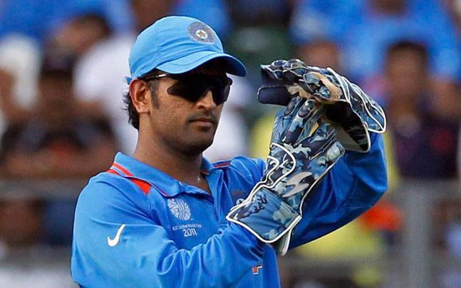

| Name | Mahendra Singh Dhoni |
|---|---|
| Born | 7 July 1981 (age 35) Ranchi, Bihar, India |
| Nickname | Mahi, MS, MSD, Captain Cool |
| Height | 5 ft 9 in (1.75 m) |
| Batting style | Right-handed |
| Bowling style | Right-arm medium |
| Role | Wicket-keeper batsman |
| Competition | Test | ODI | FC | T20Is |
|---|---|---|---|---|
| Matches | 90 | 350 | 131 | 98 |
| Runs scored | 4876 | 10773 | 7038 | 1617 |
| Batting average | 38.09 | 50.57 | 36.84 | 37.60 |
| 100s/50s | 6/33 | 10/73 | 6/47 | 2/0 |
| Top score | 224 | 183* | 224 | 56 |
| Balls bowled | 96 | 36 | 126 | - |
| Wickets | 0 | 1 | - | - |
| Catches/stumping | 256/38 | 321/123 | 364/57 | 57/34 |